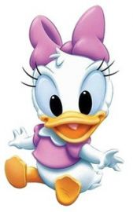
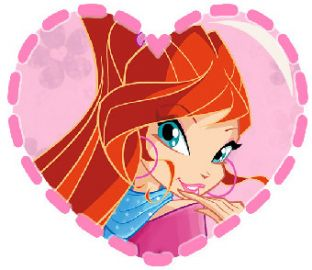

Når vi ligger her i samme seng,Ligger langt væk fra hinanden.Kan du høre mig stille sove ind?Det' som om du er en anden, mmm.
Припев:
[Strophe 1]Über die Heide, im ersten morgendlichen ScheinZiehen die Vögel, wo mögen sie wohl morgen sein
Скоро вечный самолёт,Набирая ход,Тебя увезёт.И сомнений теплоходВ помутненье водУносит, и вот...Нет, не смотри назад
I feel so unsureAs I take your handAnd lead you to the dance floorAs the music diesSomething in your eyesCalls to mind a silver screen
Восемь кварталов без остановки Через обманы, через уловки.Ты не увидел, еду на красный. Всё между нами больше, чем ясно.
I could tie up the bed sheets and slide down the houseBe gone before the morning comesI could dye my hair, I could change my name
Ты, как обычно, говоришь мне: "До свидания".Бескрайний мрак, нас разделяют расстояния.В глазах твоих - игра, а завтра - как вчера...
Dear, I fear we're facing a problemYou love me no longer, I knowAnd maybe there is nothingThat I can do to make you do
I knew you before 'bout five years agoThen you seemed to be like a personWho didn't act like the people I knowYes, something was special about you
LaLa la la la la laLa la la la la laLaLa la la la la laLa la la la la la
Ole Ole hey... Ole Ole hey..Ole Ole oh-la!
Найти и не разминутьсяСвою и только свою. Ни разу не обманутьсяУ пропасти на краю. И в сердце тихо на ощупьИскать тепло в пустоте.

На золотом крыльце сиделиМишки Гамми, Том и Джерри,Скрудж МакДак и три утёнка,Выходи, ты будешь Понка!
Белое платье...Белое платье...
Далеко-далёко берег твой высокий,Да не ближе берег мойНе достать рукою, но весь мир накрою
Этой радио-волной. Лови и помни!
We can never let the word be unspoken.We will never let our loving go come undone.Everything we had is staying unbroken, oh.

Зима давно завершила свой путь -Всего лишь две недели до тайного дня.Я знаю, волнение не даст мне уснуть,И за это прости меня.
Нам негде встречаться сейчас.Прошу, если можешь, прости.И всё, как назло, против нас,От этого нам не уйти.
Come on, come onOhh, whow